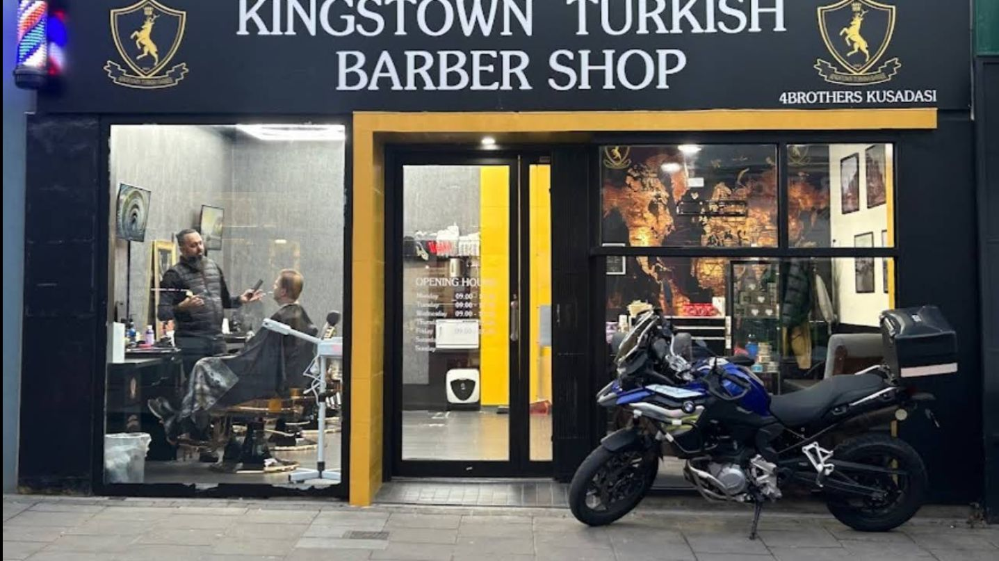
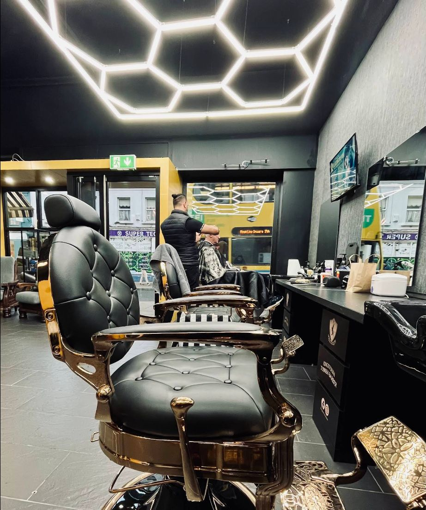
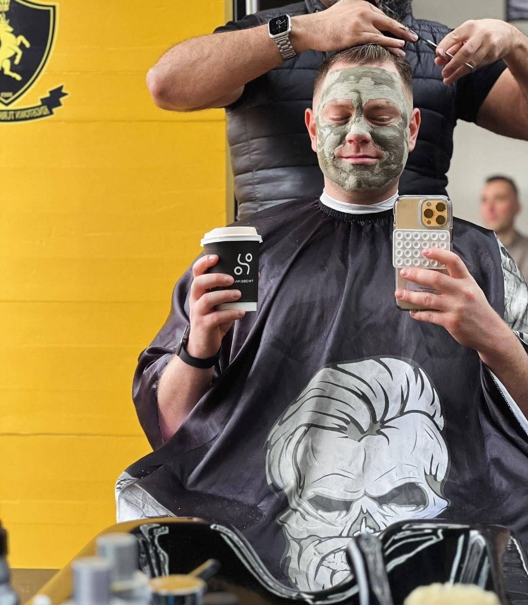

Haircut
Classic or modern, clipper or scissor — bring a photo and we'll recreate it, or let us suggest what suits you.

Sharp fades, hot towel shaves and proper beard work — done with the time and care of a Turkish barber. Walk in, sit down, leave looking fresh.
4.9 ★★★★★ from 634 Google reviewsEvery cut finished properly — hot towel, styling and the little extras that make a Turkish barber different.
Classic or modern, clipper or scissor — bring a photo and we'll recreate it, or let us suggest what suits you.
Clean, seamless fades blended down to the skin — low, mid, high, taper or drop.
Beard shaped, lined up and finished with a hot towel and oil. Pairs perfectly with a cut.
The traditional open-razor shave: steaming towels, rich lather and a smooth, close finish.
Patient, friendly barbers that parents keep coming back to — from first cuts to long hair restyles.
Clay face masks, ear and nose waxing and Turkish grooming finishes. Ask your barber on the day.
OAP and under-16 rates available. For current prices just give us a ring or drop in.


Kingstown is the old name for Dún Laoghaire — and since 2023 it's also where locals come for the full Turkish barber treatment. No rushing you out the door in ten minutes.
Went in this morning with my Son-in-Law. We both got haircuts and he got his beard trimmed. The services were amazing. Mila gave me a great haircut, much better than I get at home on Colorado! They even brewed us up some DELICIOUS Turkish coffee (at no cost)! My Son-in-Law has been in once before, and this is now his favorite place for haircuts and beard trims, very reasonably priced as well. Thank you!
Had one of the best haircuts I’ve had in a long time. Baris really listened to what I wanted and delivered exactly that — clean, sharp, and suits me perfectly. Great attention to detail and a very comfortable experience overall. Highly recommend!
Has to be one of the best hot towel shaves I’ve ever had, great attention to details, highly recommend
Absolutely top-class experience. My man gave me one of the cleanest haircuts I’ve had in a long time. Sharp fade, great attention to detail, and proper hospitality from start to finish. Also got introduced to some authentic Turkish grooming techniques that made the whole experience feel premium and unique. You can tell they genuinely care about their craft. Highly recommend if you want to leave looking and feeling fresh.
We had fantastic experience at Kingstown Turkish Barber in Dun Laoghire. Mila, Baris and Yalcin are amazing with kids. Fast, professional, and always give my son a really stylish haircut. Highly recommend to any parents looking for a kid-friendly barber. Thank you 😊
On the search for a new barbers for a while and I won’t be going anywhere else. Can’t recommend Yalcin enough. Seriously good cut and a very sound man! Thanks again
Yan was absolutely brilliant! I showed him a picture of exactly what I wanted, and he recreated it perfectly. I’ve been to a lot of salons where the haircut feels rushed and is finished in 10–15 minutes, but my experience at Kingstown was completely different. Yan took his time, paid attention to every detail, and genuinely cared about getting the cut right. I’m extremely happy with the result and would definitely recommend him. One of the best haircuts I’ve had!
Amazing barber I've travelled from Wexford just to get a cut it's speaks for its self ,, Top class highly recommended 👌
The best barber shop you can find! 💈 I’ve been getting my haircut from Yalcin or his colleagues for years - first in another place and now here and won’t go anywhere else. Always friendly, professional service with extra touch. Had by haircut done by Deco today and loved it too! What a friendly and skilled barber! Highly recommend this place! 👌 They also cut my son’s very long hair and did a great job!
Baris gave me a 5 star experience not just a great haircut but also a nose wax free of charge I’ll definitely be back again
Yalcin is an absolute master of his craft. His traditional Turkish barbering techniques are simply unmatched, and he always leaves my hair looking and feeling its best. He's also a genuinely kind and friendly person, which makes the experience even more enjoyable. On top of that, his shop is located in a convenient location with a bus stop right out front. The shop itself is beautifully designed and has a very relaxing atmosphere.
I had a great experience at Kingston Turkish Barber. Mila was my barber and she did an excellent job, really paying attention to detail and making sure everything was exactly how I wanted it. The whole team there is very friendly and welcoming, which made the visit even better. The service overall is top quality, and you can tell they genuinely care about their customers. I’ll definitely be coming back.
Walk-ins are always welcome. Got a question or want to check how busy we are? Just call or message.
| Monday | 9:00am – 6:30pm |
| Tuesday | 9:00am – 6:30pm |
| Wednesday | 9:00am – 6:30pm |
| Thursday | 9:00am – 6:30pm |
| Friday | 9:00am – 6:30pm |
| Saturday | 9:00am – 6:30pm |
| Sunday | 11:00am – 4:00pm |
Walk-ins welcome — no appointment needed, just drop in.